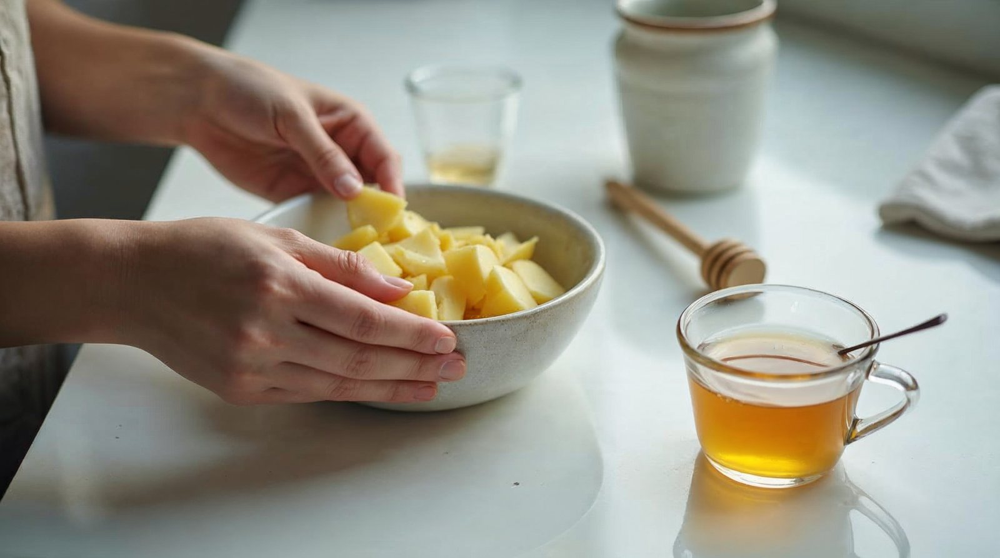

이종호 한의사 감수좋은꿈참사랑한의원 대표원장 (한의사 면허번호 19769)발행 2026-11-26 · 수정 2026-11-26
이 글의 차례
출근 준비를 하며 휴대폰으로 날씨를 확인하는데, 화면 글자 한쪽이 반짝이는 지그재그 선에 가려 잘 보이지 않습니다. 이십 분쯤 지나 그 빛이 걷히자 이번에는 오른쪽 관자놀이가 맥박에 맞춰 쿵쿵 울리기 시작합니다. 아침밥 냄새에 속까지 울렁거립니다.
지난달에도 이랬던 것 같은데, 그게 며칠이었는지, 그 전날 무엇을 했는지는 도무지 떠오르지 않습니다. 진료실에서도 비슷한 말씀을 자주 듣습니다. 올 때는 분명 무슨 이유가 있는 것 같은데, 그게 뭔지 모르겠다고요.
제 답은 기록입니다. 편두통은 사람마다 계기가 달라서, 언제 어떤 하루 끝에 시작되는지 적어 둔 기록이 가장 쓸모 있는 상담 자료가 됩니다. 저는 시작 시각과 전조, 잠, 식사, 카페인, 생리 주기, 날씨, 먹은 약과 그 뒤의 변화를 적어 오시라고 권합니다.
편두통이 있는 분들은 아픈 날만큼이나 언제 또 올지 모르는 날들을 힘들어하십니다. 가족 모임 날짜를 잡으면서도 그날 머리가 괜찮을지부터 걱정하고, 누워 있으면 겉으로 멀쩡해 보이는 탓에 눈치가 보였다고 하십니다.
그 막막함을 조금 덜어 드리는 방법이 기록이라고 생각합니다. 언제 올지 짐작이 서기 시작하면, 막연한 두려움이 준비할 수 있는 일로 바뀌기 때문입니다.
왜 편두통은 기억보다 기록이 먼저일까요
편두통은 흔히 머리 한쪽이 맥박 치듯 욱신거리고, 움직이면 더 아프며, 메스꺼움과 함께 빛이나 소리가 유난히 거슬리는 두통으로 알려져 있습니다. 한 번 오면 몇 시간에서 길게는 사흘 가까이 이어지기도 하고, 양쪽이 함께 아픈 분도 있습니다.
일부는 두통에 앞서 전조를 겪습니다. 눈앞에 반짝이는 빛이나 지그재그 선이 보이거나 시야 한쪽이 가려지고, 손이나 입 주변이 저리기도 합니다. 전조는 대개 몇 분에서 한 시간 안쪽으로 지나가고, 그 뒤에 두통이 따라오는 경우가 많습니다.
전날부터 신호를 보내기도 합니다. 하품이 잦아지거나, 목이 뻣뻣하거나, 단 것이 당기거나, 유난히 피곤하다는 분이 있습니다. 두통이 지나간 뒤 하루쯤 멍하고 기운이 없는 것도 흔한 일입니다.
그런데 아픈 날의 기억은 강하게 남고, 그 전날 몇 시에 잤는지, 점심을 걸렀는지는 금세 흐려집니다. 게다가 편두통은 검사로 잘 드러나지 않는 경우가 많아서, 진료실에서 기댈 곳은 결국 그동안의 기록입니다.
계기는 하나보다 여럿이 겹칠 때 두통으로 이어지는 경우가 많습니다. 잠이 모자란 주에 끼니까지 거르고, 생리 예정일과 비 소식이 겹치는 식이지요. 하루 이틀 기억으로는 이 겹침이 잘 보이지 않지만, 몇 주 기록을 나란히 놓으면 보이기 시작합니다.
저는 이런 말을 자주 합니다. "진료실에서는 둘이 아니라 셋이 이야기합니다. 환자분, 환자분의 맥, 그리고 저." 두통 일기를 가져오시면 여기에 목소리 하나가 더해집니다. 지난 몇 주 동안 자기 몸을 지켜본 환자분의 기록입니다.
자기 몸에서 언제 무슨 일이 일어나는지 가장 오래 지켜본 분은 제 앞에 앉은 그분입니다. 한의학에서는 편두통을 머리 하나의 일이 아니라 몸 전체의 리듬 속에서 봅니다. 그 리듬을 가장 잘 아는 분의 기록이 제게는 무엇보다 든든한 자료입니다.
머리 양쪽이 띠를 두른 듯 조이고 오후로 갈수록 무거워진다면 편두통보다 긴장성 두통에 가까울 수 있습니다. 그런 경우는 스트레스를 받으면 뒷목이 당기고 머리가 아픈 긴장성 두통은 어떻게 살피나요?를 함께 읽어 보세요.
편두통 일기에 적을 여덟 가지
꼼꼼한 일기장이 아니어도 됩니다. 아래 여덟 가지를 한 줄에 담는다고 생각하시면 됩니다.
시작 시각과 전조
몇 시에 시작해 몇 시에 끝났는지, 어느 쪽이 어떻게 아팠는지(욱신·조임), 세기는 0에서 10 가운데 몇인지 적습니다. 하던 일을 멈추고 누워야 했는지도 한마디 남겨 주세요. 같은 7점이라도 일을 이어 간 날과 눕기만 한 날은 다릅니다.
시작 시각을 어떻게 나눠 말하면 좋을지는 아침 두통과 저녁 두통은 진료실에서 어떻게 나눠서 말하면 좋을까요?에 정리해 두었습니다.
전조가 있었다면 어떤 모양이었는지, 몇 분쯤 갔는지 적습니다. 전날의 하품이나 목 뻣뻣함 같은 예고 신호도 함께요.
잠과 식사, 카페인
전날 잠든 시각과 일어난 시각, 밤에 깬 횟수를 적습니다. 편두통은 잠이 모자란 날뿐 아니라 평소보다 훨씬 오래 잔 날에도 시작된다는 분이 많습니다. 주말 늦잠 뒤 토요일 오후가 고비라는 이야기를 진료실에서 자주 듣습니다.
끼니를 거른 때와 마지막 식사 시각, 물을 얼마나 마셨는지도 적어 주세요. 특정 음식이 의심된다면 메뉴도 남겨 둡니다. 다만 한두 번 겹쳤다고 그 음식을 끊기보다, 기록에서 여러 번 되풀이되는지부터 보세요.
커피는 잔 수와 마지막 잔을 마신 시각을 적습니다. 평소 많이 마시다가 주말에 거른 날 오후에 머리가 아픈 분도 있습니다. 일부 두통약에는 카페인이 들어 있기도 해서, 약 이름까지 맞춰 보면 하루 카페인 양이 생각보다 많을 때가 있습니다.
생리 주기와 날씨
해당되는 분은 생리 시작일에 표시해 주세요. 생리 시작 이틀 전부터 사흘째 사이에 두통이 몰리는지 두세 달만 겹쳐 보아도 흐름이 보이는 경우가 많습니다. 호르몬이 든 피임약이나 약을 드신다면, 전조가 있다는 사실을 처방한 의사에게 꼭 알려 주세요.
날씨는 비나 눈, 큰 일교차, 태풍 소식처럼 눈에 띄는 변화만 적으셔도 충분합니다. 강한 햇빛이나 진한 냄새, 시끄러운 곳에 오래 있었던 일도 적어 둡니다.
날씨와 두통이 어떻게 얽히는지는 날씨가 바뀔 때마다 머리가 무겁고 아픈 것은 왜일까요?에 따로 적어 두었습니다.
약과 그 뒤의 변화
약 이름과 먹은 시각, 두통이 시작되고 얼마 뒤에 먹었는지, 한두 시간 뒤 세기가 몇으로 바뀌었는지 적습니다. 한 번 더 먹었다면 그것도 적습니다. 이 기록은 처방한 의사가 약과 먹는 때를 다시 살펴볼 때 쓸모 있는 자료가 됩니다.
그리고 한 달에 진통제나 편두통약을 먹은 날이 며칠인지 달력에 따로 세어 두세요. 알 수가 아니라 날을 셉니다. 한 달에 열흘을 넘는다면 약이 오히려 두통을 잦게 만드는 약물과용 두통일 수 있어, 처방한 의사나 약사와 먼저 상의하시길 권합니다.
기록장은 이렇게 쓰면 오래갑니다
처음부터 너무 꼼꼼하게 쓰려고 하면 일주일을 넘기기 어렵습니다. 저는 휴대폰 메모나 달력 앱에 한 줄씩 적으시라고 권합니다. 예를 들면 이런 식입니다.
○월 ○일(토) 14시 시작, 오른쪽 관자놀이 욱신 7점, 전조 없음, 누움 / 잠 02시~10시 / 아침 거름, 커피 0잔 / 생리 사흘 전 / 비 / 진통제 1알 14시 30분, 16시에 3점
두통이 없는 날도 '0' 한 글자만 남겨 주세요. 아픈 날만 적으면 비교할 날이 없습니다. 아무 일 없던 날의 잠과 커피가 있어야, 두통이 온 날 무엇이 달랐는지가 드러납니다.
매일 들여다보며 하루하루에 마음을 쓰기보다, 몇 주에 걸쳐 같은 모양이 되풀이되는지를 보시면 됩니다. 빠진 날이 있어도 그냥 넘어가세요. 쌓인 기록장은 버리지 말고 모아 두세요. 몇 달 치가 모이면 그 자체로 한 권의 진료 자료가 됩니다.
예를 들면 이런 경우입니다
실제 어느 분의 사연이 아니라, 진료실에서 자주 보는 모습을 바탕으로 그려 본 장면입니다.
예를 들어 평일에는 여섯 시간쯤 자다가 주말에 열 시간 가까이 몰아 자고, 토요일 오후마다 한쪽 머리가 욱신거리는 경우가 있습니다. 기록을 펴 보면 늦잠과 거른 커피, 거른 아침이 같은 날에 겹쳐 있곤 합니다. 이럴 때는 일어나는 시각부터 평일과 한 시간 안쪽으로 맞춰 봅니다.
예를 들어 생리 무렵마다 이틀씩 두통이 이어지는 경우도 있습니다. 두세 달 동안 생리 시작일과 두통 날짜를 한 장의 달력에 겹쳐 오시면, 산부인과나 신경과에서 상담하실 때도 그대로 쓰실 수 있습니다. 그 시기에는 잠과 끼니부터 챙기시도록 말씀드립니다.
예를 들어 약이 잘 듣지 않는다며 두통이 한참 심해진 뒤에야 약을 먹는 경우도 있습니다. 이럴 때는 두통이 시작된 시각과 약을 먹은 시각을 나란히 적어, 처방한 의사와 먹는 때를 상의해 보시라고 말씀드립니다. 혼자 약을 바꾸거나 양을 늘리지는 않습니다.
스스로 점검해 보세요
- 머리 한쪽이 맥박 치듯 욱신거린다
- 계단을 오르거나 몸을 움직이면 더 아프다
- 두통이 올 때 메스껍거나, 빛과 소리가 유난히 거슬린다
- 두통 전에 눈앞이 반짝이거나 지그재그 선이 보인 적이 있다
- 늦잠, 끼니 거름, 생리 무렵, 날씨 변화 뒤에 잘 시작된다
- 한 번 오면 반나절 넘게 가고, 누워 있어야 할 때가 많다
- 진통제나 편두통약을 먹는 날이 한 달에 열흘 가까이 된다
진단을 내리는 목록이 아니라, 진료실에서 어디부터 이야기할지 정하는 데 쓰는 목록입니다. 해당하는 줄에 표시해 기록장과 같이 보여 주세요.
먼저 이렇게 여쭙니다
- 한 달에 며칠쯤 오나요? 한 번 오면 몇 시간, 며칠 가나요?
- 두통이 오면 하던 일을 멈추고 누워야 하나요?
- 시작 전에 반짝이는 빛, 시야 가림, 손이나 입 주변 저림 같은 전조가 있나요?
- 진통제나 처방받은 편두통약을 한 달에 며칠 드시나요? 먹고 나면 어떻게 달라지나요?
- 가족 중에 편두통이 있는 분이 있나요? 생리 주기와 겹치나요?
기록이 없어도 괜찮습니다. 그때는 가장 최근에 아팠던 하루를 함께 거꾸로 짚어 봅니다. 그 전날 몇 시에 주무셨는지, 무엇을 드셨는지부터요.

일상에서 먼저 해 볼 수 있는 것
- 일어나는 시각을 주말에도 평일과 한 시간 안쪽으로 맞추기
- 끼니를 거르지 않고, 바쁜 날에는 작은 간식이라도 챙기기
- 물은 한 번에 많이보다 한두 시간마다 나누어 마시기
- 커피는 양과 시각을 일정하게 하고, 줄일 때는 며칠에 걸쳐 조금씩 줄이기
- 두통이 시작되면 어둡고 조용한 곳에서 쉬고, 처방받은 약은 안내받은 대로 먹기
기록에서 계기가 보이면 한꺼번에 다 없애려 하지 마세요. 이것저것 금지하다 보면 그 자체가 또 하나의 긴장이 되기 쉽습니다. 여러 번 되풀이된 계기 하나부터 줄여 보고, 몇 주 뒤 기록이 어떻게 달라졌는지 봅니다.
저는 치료를 이렇게 설명드리곤 합니다. "치료는 찌개를 끓일 때 찌꺼기를 걷어내듯, 몸과 마음에 올라오는 괴로움을 하나하나 걷어내는 일입니다." 생활도 같습니다. 한 번에 한 숟가락씩 걷어 내면 됩니다.
한의원에서 함께 살필 수 있는 경우
- 신경과 진료를 이어 가면서도 두통이 잦아 일상이 힘든 경우
- 두통과 함께 목과 어깨, 턱이 늘 굳어 있는 경우
- 두통이 오면 메스껍고, 평소에도 소화가 약한 편인 경우
- 잠이 얕거나 생활 리듬이 흔들리는 시기에 두통이 몰리는 경우
좋은꿈참사랑한의원에서는 처음 오신 분이든 다시 오신 분이든 모든 분께 맥부터 짚습니다. 맥을 짚으며 두통의 횟수와 모양, 드시는 약, 받으신 검사를 듣고, 잠과 소화, 대변, 손발의 온기, 마음 쓰이는 일도 여쭙습니다.
가져오신 기록장이 있으면 펼쳐 놓고 두통이 온 날과 그 전날을 나란히 봅니다. 필요하다고 판단될 때 혀도 보고, 목 뒤와 두피, 턱 주변은 손으로 짚어 굳은 곳을 찾습니다.
이렇게 살핀 내용을 바탕으로 침, 약침, 추나, 한약 상담 가운데 지금 상태에 맞는 방법을 함께 정합니다. 신경과에서 처방받은 약이 있다면 이름을 먼저 확인해 그 치료와 겹치지 않게 살핍니다.
귀가 전에는 다음 진료까지 기록장에 무엇을 더 적어 오시면 좋을지 정해 드립니다. 다시 오시면 지난번 이후 두통이 있던 날이 며칠이었는지, 약을 먹은 날은 며칠이었는지부터 이어서 여쭙습니다.
신경과 진료가 필요한 때
한 달에 네 번 넘게 와서 일상이 자주 흔들리거나, 진통제와 편두통약을 먹는 날이 한 달에 열흘을 넘는다면 신경과 진료를 받아 보시길 권합니다. 두통이 오는 횟수를 줄이기 위한 약이 필요한지 상의할 수 있습니다.
전조가 처음 생겼거나 한 시간 넘게 이어진 경우, 전조의 모양이 달라진 경우, 편두통의 양상이 바뀌어 점점 잦아지고 심해지는 경우도 미루지 말고 신경과에서 먼저 확인하세요. 기록장을 그대로 가져가시면 진료가 한결 수월해집니다. 한의원 진료는 그 치료와 나란히 이어 가실 수 있습니다.
이렇게 기록해 오시면 상담이 쉬워집니다
- 4~8주 동안의 편두통 일기(두통 없는 날의 '0'까지)
- 한 달 동안 진통제·편두통약을 먹은 날 수와 약 이름
- 생리 시작일과 두통 날짜를 겹친 달력(해당되는 경우)
- 받으신 검사 결과와 처방전, 또는 드시는 약봉지
기록이 완벽하지 않아도 됩니다. 한 줄이라도 적힌 날이 있다면, 그 한 줄에서부터 이야기를 시작하면 됩니다.
언제 올지 모르는 두통을 안고 사는 일은 아픈 시간만큼이나 기다리는 시간이 고단합니다. 그 기다림이 조금이라도 덜 막막해지도록 기록장을 같이 읽어 가겠습니다. 다음에 오시면 마지막으로 아팠던 날보다 그 전날 칸부터 펼쳐 보겠습니다.
이런 증상은 먼저 확인이 필요합니다
- 갑자기 시작된, 지금까지 겪어 본 적 없는 극심한 두통
- 말이 어눌해지거나 한쪽 팔다리에 힘이 빠지는 등 신경 증상이 함께 오는 경우
이런 신호가 있으면 한의원보다 가까운 병원이나 응급실을 먼저 찾으세요.

여쭙는 것
- 한 달에 며칠쯤 오나요? 한 번 오면 몇 시간, 며칠 가나요?
- 두통이 오면 하던 일을 멈추고 누워야 하나요?
- 시작 전에 반짝이는 빛, 시야 가림, 손이나 입 주변 저림 같은 전조가 있나요?
생활에서 해 볼 것
- 일어나는 시각을 주말에도 평일과 한 시간 안쪽으로 맞추기
- 끼니를 거르지 않고, 바쁜 날에는 작은 간식이라도 챙기기
- 물은 한 번에 많이보다 한두 시간마다 나누어 마시기
한의원에서 함께 살필 것
- 신경과 진료를 이어 가면서도 두통이 잦아 일상이 힘든 경우
- 두통과 함께 목과 어깨, 턱이 늘 굳어 있는 경우
- 두통이 오면 메스껍고, 평소에도 소화가 약한 편인 경우
먼저 확인이 필요한 신호
- 갑자기 시작된, 지금까지 겪어 본 적 없는 극심한 두통
- 말이 어눌해지거나 한쪽 팔다리에 힘이 빠지는 등 신경 증상이 함께 오는 경우
한눈에 보는 표
| 구분 | 핵심 |
|---|---|
| 여쭙는 것 | 한 달에 며칠쯤 오나요? 한 번 오면 몇 시간, 며칠 가나요? 두통이 오면 하던 일을 멈추고 누워야 하나요? |
| 생활에서 해 볼 것 | 일어나는 시각을 주말에도 평일과 한 시간 안쪽으로 맞추기 끼니를 거르지 않고, 바쁜 날에는 작은 간식이라도 챙기기 |
| 한의원에서 함께 살필 것 | 신경과 진료를 이어 가면서도 두통이 잦아 일상이 힘든 경우 두통과 함께 목과 어깨, 턱이 늘 굳어 있는 경우 |
| 먼저 확인이 필요한 신호 | 갑자기 시작된, 지금까지 겪어 본 적 없는 극심한 두통 말이 어눌해지거나 한쪽 팔다리에 힘이 빠지는 등 신경 증상이 함께 오는 경우 |
자주 묻는 질문
기록은 얼마 동안 해야 하나요?
한 달에 몇 번 오는 편두통이라면 4~8주, 생리 주기와 관련이 있어 보이면 두세 달을 적어 보시길 권합니다. 빠진 날이 있어도 괜찮습니다.
처방받은 편두통약을 먹으면서 한의원 진료를 받아도 되나요?
받으실 수 있습니다. 처방받은 약은 처방한 의사와 상의 없이 바꾸지 마시고, 드시는 약 이름을 알려 주시면 겹치지 않도록 확인하고 진료를 이어 갑니다.
두통이 올 때 커피를 마셔도 되나요?
사람마다 다릅니다. 평소 커피를 많이 드시거나 커피를 거른 날 두통이 온다면 카페인이 계기일 수 있어, 잔 수와 시각을 적으며 며칠에 걸쳐 조절해 보세요.
전조만 있고 두통이 없던 날도 적어야 하나요?
네, 적어 주세요. 전조의 모양과 이어진 시간을 적어 두시면 신경과 진료 때도 쓸모 있는 자료가 됩니다. 전조가 처음 생겼다면 미루지 말고 신경과에서 확인하세요.
좋은꿈참사랑한의원은 재진 때 지난번 이야기부터 이어서 여쭙니다. 진료시간과 예약은 오시는 길에서 확인하세요.
어디서 상담받을 수 있나요?
좋은꿈참사랑한의원은 서울 동작구 만양로2길 2 신성빌딩 3층·5층(서울 동작구 상도동, 7호선 상도역 3번 출구 근처)에 있습니다. 한의사 3명(이종호 대표원장, 조영기 수석진료원장, 정원영 진료원장)이 진료합니다. 진료시간은 평일 09:30~20:00(점심 13:00~14:00), 토·일·공휴일 09:30~15:00이며, 방문 전 전화로 확인을 권합니다. 예약은 네이버 예약, 카카오톡 상담, 전화 02-815-7510로 받습니다.
이 글은 일반적인 건강 정보이며 개인의 진단이나 치료를 대신하지 않습니다. 증상이 있거나 복용 중인 약이 있다면 진료를 통해 확인하세요. 치료 효과는 개인마다 다를 수 있습니다.
작성 기준: 일반적으로 알려져 있는 건강 정보를 참고해 정리했습니다(대표원장 감수). 증상 기록은 1~2주 동안 하루 1회, 비슷한 시간에 적어 오시면 지난 상태와 비교하기 쉽습니다.